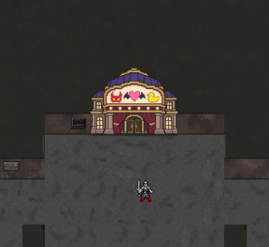
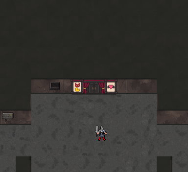
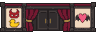

2기생 극장 · 기존 벽 높이에 맞춘 입구
기존 잔향도시 벽 높이32픽셀 안에 96×32 입구를 넣었습니다. 같은 지형·바닥·캐릭터 위치에서 비교합니다. 시설 전체 대신 커튼·철문·기수 포스터를 벽에 부착한 버전입니다.
이전 · 건물 전체형

수정 · 기존 벽에 맞춘 입구형

기수 특징
좌측: 아야메 가면·스바루 오리 / 우측: 초코센의 날개 달린 하트 / 중앙: 극장 커튼과 철문

원래 크기96×32픽셀
브라우저 배치 검토용이며 실제 게임 엔진에는 아직 적용하지 않았습니다. 다른 시설은 이번 수정에 포함하지 않았습니다. 원화·도트 생성 기록